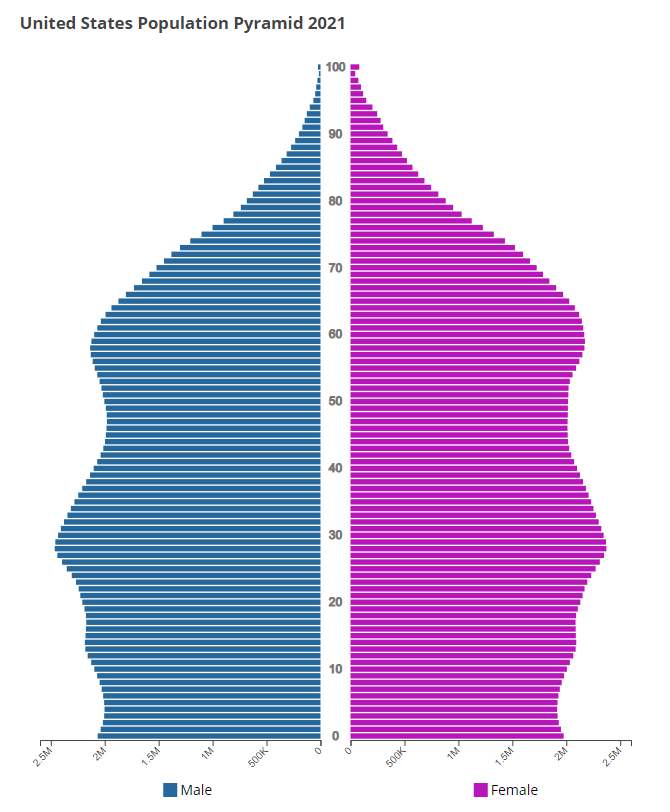
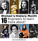

Now just 25% are like Mayuko

mayuko is the first woman I saw sharing her journey on youtube way before Mbenda, Maya, and other great women software engineers. To say that Mayuko also deserves an article focused on her while highlighting the importance of getting girls into tech.
Women make up 47% of all employed adults in the US and this number is certainly smaller if we take the whole world into account. if we consider only tech roles, women hold 25% of computing roles according to data from the National Center for Women & Information Technology (NCWIT). A quarter of the whole tech workers is made of people like Mayuko, Mbenda, Maya …
However, if we take the picture of the US demographic trend, it looks like there is an equilibrium of the size of the population of women and men in all segments of age. Then why this Gap in the tech industry?

Early at the beginning of computing, when computers were made of vacuum tubes, women were crowding computing rooms. They were there to make the company’s programs run. They were there to program. They were there to switch cables and make our calls happen.
More than that they participated in the history and the evolution of technology like Ada Lovelace, Grace Hopper and all these women below did

Today Women like Mayuko are trying to follow the same path for making the tech industry better but it is obvious to say that this industry needs more of them and this video below is enough to illustrate that the proportion of women in the tech industry is quite now low
Tech Guys are like me kind and open-minded but we should make the effort for promoting women into tech my the means that we think we could leverage the make the equilibrium of size and power between women and men happens.
I seem to have forgotten that this article like all the articles of the Greyio Heart Experiment is about highlighting the work of great people and this one is about Mayuko, a great software engineer that you can watch on youtube and follow on Twitter
Mayuko is running the Hanko Academy with Han Kim. The Hanko Academy will teach IOS development for you to become a skilled and talented IOS software engineer like Mayuko.
I hope you would like to be this IOS software engineer because I am.
Thank Mayuko for making a ruckus and for inspiring girls to get into tech because
is important for the world.
PS: Mayuko is making and selling nice techy Hoodies that you can buy here